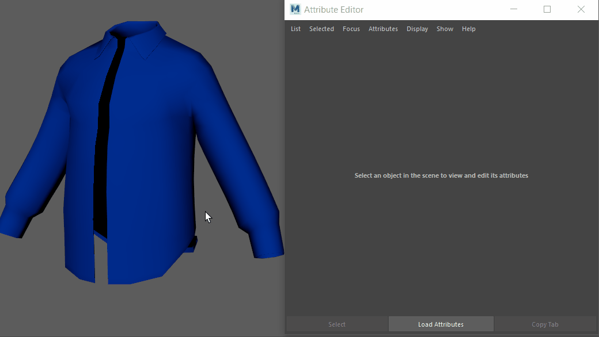
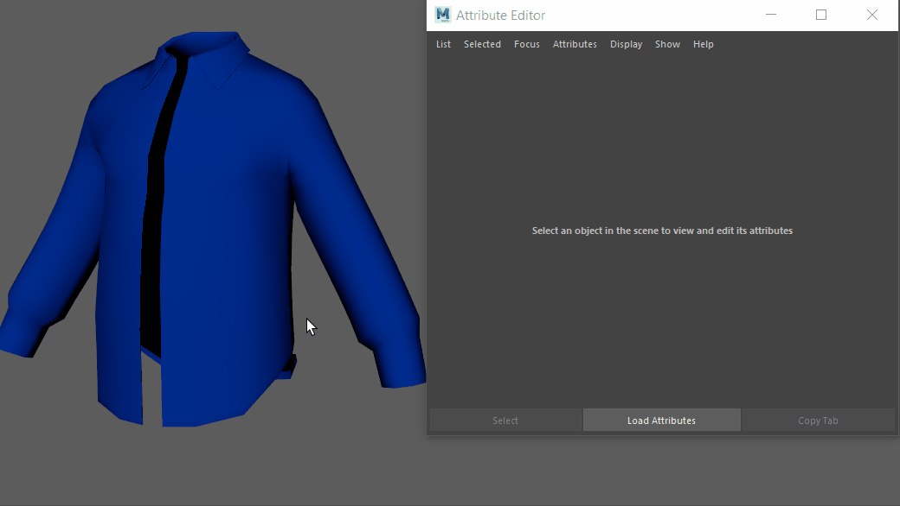
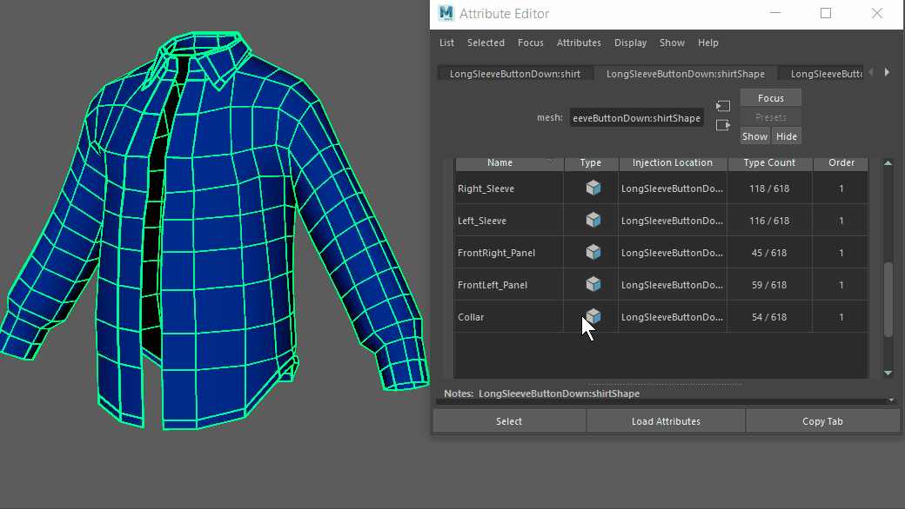

使用组件标记表达式可动态定义变形器成员身份。可以在属性编辑器(Attribute Editor)中每个形状节点的“组件标记”(Component Tags)区域中编辑“组件标记”(Component Tag)成员身份。
可以在“组件标记”(Component Tags)名称中使用冒号 (:) 和句点(.)。请参见组件标记表达式主题的命名语法部分。
有关如何使用“组件标记”(Component Tags)定义变形器成员身份的信息，请参见为几何体指定组件标记。
- 选择组件标记
-

-
- 在“大纲视图”(Outliner)或视口中选择几何体。
- 在“属性编辑器”(Attribute Editor)中，单击几何体的形状节点并展开“组件标记”(Component Tags)部分。
- 在表中的组件标记上单击鼠标右键，然后从菜单中选择“选择组件”(Select Components)。如果表中未列出任何内容，请确保选择了几何体。
- 从组件标记成员身份添加/移除元素
-

- 按选定组件增加或减少组件标记成员身份。
注： 在一个组件标记中只能添加/移除同一组件类型。例如，不能将边添加到面的组件标记选择中。
-
向现有组件标记添加元素
- 在“属性编辑器”(Attribute Editor)的“组件标记”(Component Tags)部分中，选择要向其添加更多组件的标记。
- 转到几何体，按 Shift 键，然后选择要添加的组件。
- 在“组件标记”(Component Tags)表中，在要向其添加组件的标记上单击鼠标右键，然后选择“添加选定对象”(Add Selected)。
从现有组件标记中移除元素
- 在“属性编辑器”(Attribute Editor)的“组件标记”(Component Tags)部分中，选择要从其减去组件的标记。
- 转到几何体，按 Ctrl 键，然后选择要从分组中减去的组件。
- 在“组件标记”(Component Tags)表中，在要从中减去组件的标记上单击鼠标右键，然后选择“移除选定对象”(Remove Selected)。
- 更改现有组件标记的标记类型
-
- 在“属性编辑器”(Attribute Editor)的“组件标记”(Component Tags)部分中，选择要更改组件的标记。
- 在表中的对应行上单击鼠标右键，然后选择“转化为面”(Convert to Faces)、“转化为边”(Convert to Edges)或“转化为顶点”(Convert to Verts)。
- 单击“选择组件”(Select Components)以查看更改。
- 将组件标记合并为新标记
-

-
- 在“属性编辑器”(Attribute Editor)的“组件标记”(Component Tags)部分中，按住 Shift 或 Ctrl 键并选择要合并的组件标记。
- 在表中的对应行上单击鼠标右键，然后选择“合并”(Merge)。将从选定标记创建新的合并标记。
- 单击“选择组件”(Select Components)以查看更改。
- 其他组件标记成员身份编辑选项
- 对于其他选项，在“组件标记”(Component Tags)表中对应的组件标记行上单击鼠标右键，然后选择：
- 删除(Delete) - 将移除标记。
- 重命名...(Rename...) - 将打开一个窗口，您可以在其中命名标记。
- 复制(Duplicate) - 将复制标记。
- 替换为选定对象(Replace with Selected)将使用选定组件填充组件标记成员身份。
- 使用“清除”(Clear)可清空组件标记成员身份，以便可以擦除某个组件标记的所有指定，但保留名称以便可以重用。
-
注： 默认情况下，组件标记包含在某些基本体中。如果不希望应用这些标记，请转到属性编辑器(Attribute Editor)中的基本体选项卡（例如，Cube1），并禁用“创建组件标记”(Component Tag Create)选项。

polyCube1 的默认组件标记。